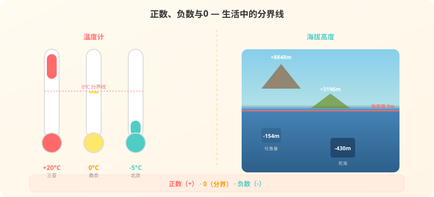

冬天北京气温零下5度，怎么写这个数？让我们一起认识负数！

选一个你感兴趣的场景，后面的内容会围绕它展开。
选择或输入后，本课会围绕你的问题展开。
这些题不难，看看你已经知道多少。
第1题：下面哪些数你认识？把认识的读出来。
3、5、-2、0、100、-8848、1.5、-0.5
第2题：北京某天最高气温是零上3°C，最低气温是零下5°C。
"零下5°C"该怎么写呢？
看！三个城市同一天的最低气温：
📌 零上温度：比0°C高的温度，用正数表示，如 +20°C（"+"可以省略，写成 20°C）
📌 零下温度：比0°C低的温度，用负数表示，如 -5°C（"-"不能省略！）
📌 0°C：零上和零下的分界线，它本身既不是零上也不是零下
不光温度，海拔高度也用正负数来表示：
📌 以海平面为基准（0m），高于海平面用正数，低于海平面用负数
📌 珠穆朗玛峰海拔 +8848.86m（正数，"+"可省略）
📌 死海海拔 -430m（负数，表示低于海平面430米）
💡 关键发现：温度以0°C为界，海拔以海平面为界——0都是分界点！
例题：读出下面的数，并说出它表示的意思。
+15、-8、+2000、-120、0
第一步：逐个读数
+15 读作"正十五" -8 读作"负八"
+2000 读作"正二千" -120 读作"负一百二十"
0 读作"零"
第二步：分类
正数：+15、+2000（"+"可以省略，15、2000也是正数）
负数：-8、-120（"-"不能省略！）
0：既不是正数，也不是负数
第三步：说出含义
+15：零上15°C / 海拔15m / 盈利15元
-8：零下8°C / 低于海平面8m / 亏损8元
0：零度 / 海平面 / 不盈不亏
⚠️ 易错提示：0不是正数！0不是负数！0是它们的分界线。"-"号绝对不能省略，省了就变成正数了。
把下面的温度分到正确的区域！点击数字即可分类。
☀️ 零上（正数）
🌡️ 分界（0）
❄️ 零下（负数）
第1题：下面说法正确的是？
第2题：-10 的"-"号可以省略吗？
第3题：+5和5是不是同一个数？
第1题：把下面的数分别填入正数圈和负数圈。
-7、2.5、0、-100、+36、-0.8、99
正数有：
第2题：某地一天中午气温是零上6°C，半夜气温是零下4°C。用正负数表示这两个温度。
本节课在整个数学知识树中的位置。